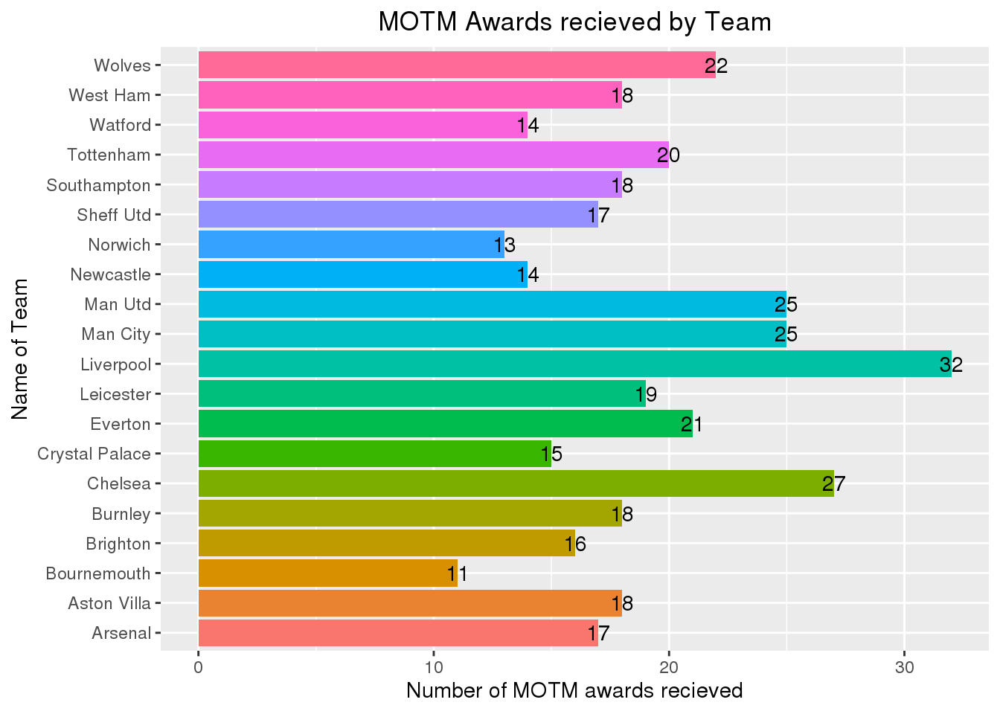
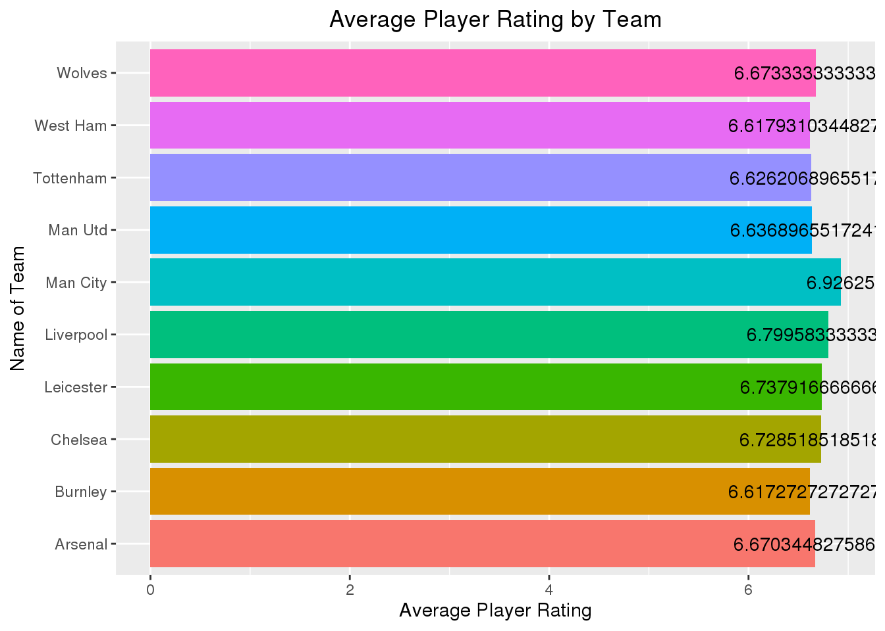
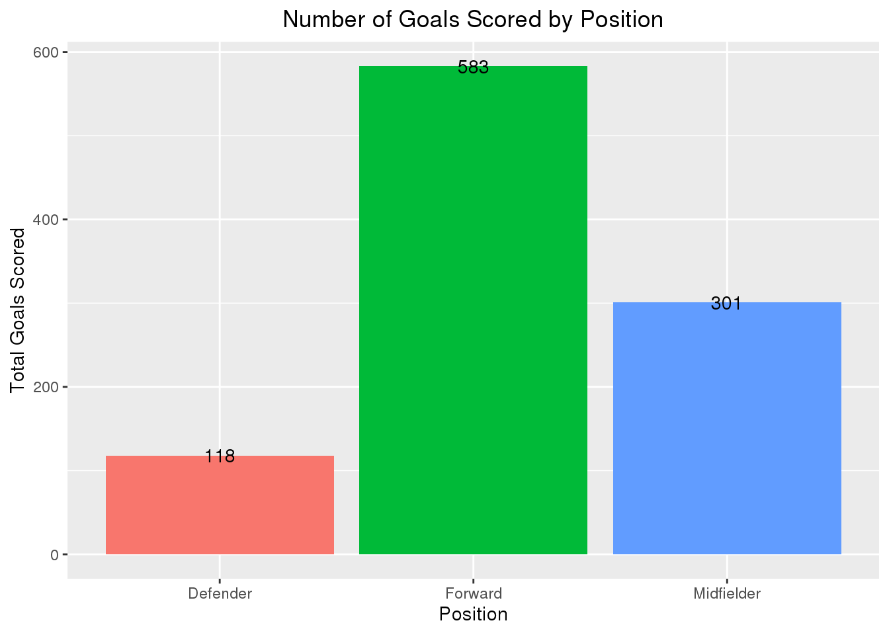
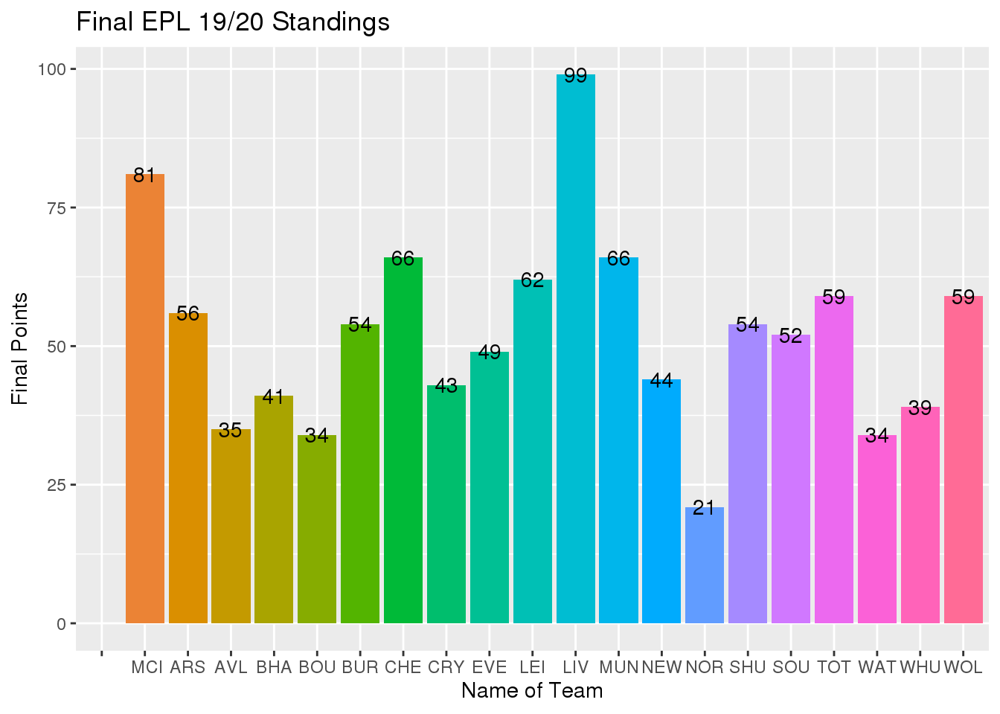

library(here)
library(ggplot2)
library(patchwork)
library(tidyverse)
library(readxl)
library(tinytex)
library(fivethirtyeight)
knitr::opts_chunk$set(echo = FALSE, tidy = TRUE)
epl2 <- read.csv(file = here::here("epl_data", "EPL_19_20_GW_Timeseries.csv"))
epl3 <- read.csv(file = here::here("epl_data", "epl_players_stats.csv"))
head(epl2)
## Teams GW1_Points GW1_Standing GW2_Points GW2_Standing GW3_Points GW3_Standing
## 1 MCI 3 1 4 3 7 2
## 2 MUN 3 2 4 4 4 5
## 3 LIV 3 3 6 1 9 1
## 4 BHA 3 4 4 5 4 8
## 5 BUR 3 5 3 10 4 6
## 6 TOT 3 6 4 6 4 7
## GW4_Points GW4_Standing GW5_Points GW5_Standing GW6_Points GW6_Standing
## 1 10 2 10 2 13 2
## 2 5 8 8 4 8 8
## 3 12 1 15 1 18 1
## 4 4 16 5 16 6 15
## 5 4 12 5 14 8 9
## 6 5 9 8 3 8 7
## GW7_Points GW7_Standing GW8_Points GW8_Standing GW9_Points GW9_Standing
## 1 16 2 16 2 19 2
## 2 9 10 9 12 10 14
## 3 21 1 24 1 25 1
## 4 6 16 9 14 9 16
## 5 9 11 12 7 12 8
## 6 11 6 11 9 12 7
## GW10_Points GW10_Standing GW11_Points GW11_Standing GW12_Points GW12_Standing
## 1 22 2 25 2 25 4
## 2 13 7 13 10 16 7
## 3 28 1 31 1 34 1
## 4 12 14 15 8 15 11
## 5 12 13 12 14 15 10
## 6 12 11 13 11 14 14
## GW13_Points GW13_Standing GW14_Points GW14_Standing GW15_Points
## 1 28 3 29 3 32
## 2 17 9 18 9 21
## 3 37 1 40 1 43
## 4 15 12 15 16 18
## 5 18 7 18 10 18
## 6 17 10 20 5 20
## GW15_Standings GW16_Points GW16_Standing GW17_Points GW17_Standing
## 1 3 32 3 35 3
## 2 6 24 5 25 6
## 3 1 46 1 49 1
## 4 13 19 12 20 13
## 5 12 18 13 21 12
## 6 8 23 7 26 5
## GW18_Points GW18_Standing GW19_Points GW19_Standing GW20_Points GW20_Standing
## 1 38 3 38 3 41 3
## 2 25 8 28 8 31 5
## 3 49 1 52 1 55 1
## 4 20 13 20 15 23 14
## 5 24 10 24 12 24 13
## 6 26 7 29 6 30 6
## GW21_Points GW21_Standing GW22_Points GW22_Standing GW23_Points GW23_Standing
## 1 44 3 47 2 48 2
## 2 31 5 34 5 34 5
## 3 58 1 61 1 64 1
## 4 24 14 24 14 25 15
## 5 24 15 24 15 27 14
## 6 30 6 30 8 31 8
## GW24_Points GW24_Standing GW25_Points GW25_Standing GW26_Points GW26_Standing
## 1 51 2 51 2 54 2
## 2 34 5 35 7 38 7
## 3 70 1 73 1 76 1
## 4 25 15 26 15 27 15
## 5 30 13 31 11 34 11
## 6 34 6 37 5 40 5
## GW27_Points GW27_Standing GW28_Points GW28_Standing GW29_Points GW29_Standing
## 1 57 2 57 2 57 2
## 2 41 5 42 5 45 5
## 3 79 1 79 1 82 1
## 4 28 15 28 15 29 15
## 5 37 10 38 9 39 10
## 6 40 6 40 7 41 8
## GW30_Points GW30_Standing GW31_Points GW31_Standing GW32_Points GW32_Standing
## 1 63 2 63 2 66 2
## 2 46 5 49 5 52 5
## 3 83 1 86 1 86 1
## 4 32 15 33 15 33 15
## 5 39 11 42 11 45 10
## 6 42 8 45 7 45 9
## GW33Points GW33_Standing GW34_Points GW34_Standing GW35_Points GW35_Standing
## 1 66 2 69 2 72 2
## 2 55 5 58 5 59 5
## 3 89 1 92 1 93 1
## 4 33 15 36 15 36 15
## 5 46 10 49 10 50 10
## 6 48 8 49 9 52 8
## GW36_Points GW36_Standing GW37_Points GW37_Standing GW38_Points GW38_Standing
## 1 75 2 78 2 81 2
## 2 62 5 63 3 66 3
## 3 93 1 96 1 99 1
## 4 37 16 38 16 41 15
## 5 51 10 54 9 54 10
## 6 55 7 58 7 59 6
## id name nationality team team_id age height weight
## 1 816 Kevin De Bruyne be Man City 875 29 181 68
## 2 622 Bruno Fernandes pt Man Utd 314 26 179 69
## 3 812 Ricardo Pereira pt Leicester 652 26 175 70
## 4 287 Adama Traoré es Wolves 518 24 178 72
## 5 158 Riyad Mahrez dz Man City 875 29 179 67
## 6 576 Sadio Mané sn Liverpool 339 28 175 69
## position roles games exit_on_sub minutes rating_m goals assists
## 1 Midfielder M_C,M_L,M_R,FW 35 3 2800 7.97 13 20
## 2 Midfielder M_C,M_L,M_R 14 0 1223 7.73 8 7
## 3 Defender D_L,D_R,M_R 28 0 2520 7.50 3 2
## 4 Forward M_L,M_R,FW 37 10 2608 7.49 4 9
## 5 Forward AM_C,AM_L,AM_R 33 12 1942 7.48 11 9
## 6 Forward AM_C,AM_L,AM_R,FW 35 4 2756 7.45 18 7
## yel_cards red_cards shots_m aerials_won_m motm successful_passes_pt
## 1 3 0 2.8 0.5 10 81.5
## 2 2 0 3.1 0.2 3 75.7
## 3 1 0 0.6 1.5 2 78.9
## 4 1 0 1.2 1.2 6 74.4
## 5 0 0 2.2 0.3 3 90.1
## 6 3 0 2.2 1.2 7 81.6
## key_passes_m dribbles_won_m fouls_given_m offside_m dispossessed_m passes_m
## 1 3.9 1.4 0.8 0.1 0.9 54.5
## 2 2.1 1.1 1.0 0.1 0.9 55.5
## 3 1.0 2.1 1.3 0.0 1.1 56.1
## 4 1.3 5.0 2.1 0.2 1.8 19.2
## 5 1.8 1.6 0.9 0.4 1.0 33.2
## 6 1.7 2.0 1.5 0.4 1.6 31.5
## accurate_crosses_m accurate_long_passes_m accurate_through_passes_m tackles_m
## 1 2.1 3.5 0.4 1.3
## 2 1.0 3.3 0.3 1.6
## 3 0.3 2.1 0.1 4.2
## 4 1.2 0.2 0.1 0.9
## 5 0.6 1.7 0.2 0.8
## 6 0.3 1.0 0.1 1.3
## interceptions_m fouls_m clearances_m dribbled_past_m owm_goals
## 1 0.5 0.7 0.7 1.4 0
## 2 0.8 0.6 1.0 2.4 0
## 3 1.8 1.6 2.6 1.9 0
## 4 0.4 1.1 0.4 0.4 0
## 5 0.5 0.4 0.2 0.8 0
## 6 0.4 1.3 0.2 0.8 0
## gk_in_goal_area_saves_m gk_inside_box_saves_m gk_outside_box_saves_m
## 1 0 0 0
## 2 0 0 0
## 3 0 0 0
## 4 0 0 0
## 5 0 0 0
## 6 0 0 0
## gk_saves_m
## 1 0
## 2 0
## 3 0
## 4 0
## 5 0
## 6 0
For this project, I am examining the 2019-2020 English Premier League statistics for individual players and teams. In the dataset “epl_players_stats.csv” from FiveThirtyEight, the file goes into full detail about players, listing data like height, position, goals, age, assists, ect. So I will be examining multiple attribuites of players around the league. In the dataset “EPL_19_20_GW_Timeseries.csv”, also collected from FiveThirtyEight, consists of week by week standings and how many points each team aquired in their respective week. In “EPL_19_20_GW_Timeseries.csv” there were 1,048,575 observations and 77 variables, and in “epl_players_stats.csv”, there are 522 observations and 41 variables. The variables and observations are a factor with multiple levels which explains what teams each player plays for and their statistics for they achieved in the 19/20 English Premier League season.
Do player’s height play a role in their success?
In order to answer this question, I will be comparing the players height to 3 different variables: goals scored, assists, and Man of the Match awards. I will analyze each players statistics for the 19/20 season based off their heights. Using a boxplot, the results will be given a visualization of the results I gather with the data. Also, I will apply a facet by position, giving us a better visualization of player results by position.
The first graph, is comparing the height of players, not including goalkeepers, to how many goals they scored during the season. I filtered out any player that plays the goalkeeper position and keeping forwards, defenders, and midfielders that have played in at least 5 games and scored at least 1 goal.
epl3 %>% summarise(avg_height = mean(height))
## avg_height
## 1 175.3985
epl3 %>% select(name, position, height, weight, goals, games) %>% filter(games >
5, position != "Goalkeeper", goals > 1) %>% ggplot(aes(x = goals, y = height)) +
geom_boxplot(fill = "purple4") + geom_hline(yintercept = 175.4, linetype = "dashed",
color = "blue") + geom_jitter() + ylim(165, 200) + facet_wrap(~position) + ylab("Height of Players (cm)") +
xlab("Goals Scored") + ggtitle("Goals Scored vs Height") + theme(plot.title = element_text(hjust = 0.5))
## Warning: Continuous x aesthetic -- did you forget aes(group=...)?
## Warning: Removed 2 rows containing non-finite values (stat_boxplot).
## Warning: Removed 2 rows containing missing values (geom_point).

The blue dashed line shows the average height of players excluding goalkeepers, which is 175.4 cm or 5’7 ft. So, the results show that taller players tend to score more than forwards, which is not as surprising. Usually shorter players that are fast and agile compared to taller players would score more, but not according to the data. The results could be justified because goals in a game could come from a set piece, which gives taller players an advantage over shorter players, allowing them to score headers from corner kicks and free kicks.
In the following graphs I applied the same requirements, except this time the graph will analyze assists vs height of players.
epl3 %>% filter(games > 5, position != "Goalkeeper", assists > 1) %>% ggplot(aes(x = assists,
y = height)) + geom_boxplot(fill = "skyblue2") + geom_hline(yintercept = 175.4,
linetype = "dashed", color = "blue") + geom_jitter() + ylim(165, 200) + facet_wrap(~position) +
ylab("Height of Players (cm)") + xlab("Assists") + ggtitle("Assists vs Height") +
theme(plot.title = element_text(hjust = 0.5))
## Warning: Continuous x aesthetic -- did you forget aes(group=...)?
## Warning: Removed 2 rows containing non-finite values (stat_boxplot).
## Warning: Removed 2 rows containing missing values (geom_point).
According from the results shown in the boxplot graph, again players above the average height tend to preform better in the assist column too. Most of the black dots appear to be above the blue dotted line. There seems to be one midfielder that has provided more assits’ than any other player respectively. Even the player with the most assist is above the average height of players, measuring at about 182 centimeters tall.
In the next graph, the boxplot will be comparing man of the match awards vs height of players. The Man of the Math award is given to the single best player of each game based on their performance. The requirements from previous graphs apply to this graph.
epl3 %>% filter(games > 5, motm > 1, position != "Goalkeeper") %>% ggplot(aes(x = motm,
y = height)) + geom_boxplot(fill = "gold3") + geom_hline(yintercept = 175.4,
linetype = "dashed", color = "blue") + geom_jitter() + ylim(165, 200) + facet_wrap(~position) +
ylab("Height of Players (cm)") + xlab("Man of the Match awards recieved") + ggtitle("MOTM vs Height") +
theme(plot.title = element_text(hjust = 0.5))
## Warning: Continuous x aesthetic -- did you forget aes(group=...)?

Finally, the results of this graph answers the question originally asked. In the boxplot shown above, the majority of the points, representing man of the match awards, tend to be above the blue dotted line. So, taller players are more likly to score more goals, provide more assist, and recieve the man of the match award compared to shorter players under the height of 5’7ft.
What teams have better player performance?
In order to answer this question I will analyze players from each team according to their match rating average throughout the season and the amount of Man of the Match awards received by each team. Using column charts, I will group players by their teams and then get the average player rating of each athlete and count all the MOTM awards, and then will compare the results to other teams in the Premier League to figure out which team had the best prforming players.
In this first graph, I compared the total amount of Man of the Match (MOTM) awards per team.
epl3 %>% group_by(team) %>% summarise(total_motm = sum(motm)) %>% arrange(desc(total_motm)) %>%
ggplot(aes(team, total_motm, fill = team)) + geom_col() + geom_text(aes(label = total_motm)) +
coord_flip() + theme(legend.position = "none") + xlab("Name of Team") + ylab("Number of MOTM awards recieved") +
ggtitle("MOTM Awards recieved by Team") + theme(plot.title = element_text(hjust = 0.5))

The results from the graph shows that players from Liverpool accumulated the most MOTM awards throughout the 19/20. Liverpool collected 32 MOTM awards, which shows great player performances. In the EPL, each teams plays a total of 38 games, meaning out of the 38 games Liverpool played, 32 out of those games a player from their team received the award. Roughly, in the total games they played, a player from Liverpool received the award 89% of the time. Chelsea, Manchester City, and Manchester United followed no too far behind.
In the next graph, the average player rating of each team is compared to other teams around the league.
epl3 %>% group_by(team) %>% summarise(avg_player_rating = mean(rating_m)) %>% arrange(desc(avg_player_rating)) %>%
slice(1:10) %>% ggplot(aes(team, avg_player_rating, fill = team)) + geom_col() +
coord_flip() + geom_text(aes(label = avg_player_rating)) + theme(legend.position = "none") +
xlab("Name of Team") + ylab("Average Player Rating") + ggtitle("Average Player Rating by Team") +
theme(plot.title = element_text(hjust = 0.5))

In the graph, only the top 10 teams with the best average player rating was plotted. From the results shown above, the club of Manchester City averaged the highest player rating throughout the season compared to teams around the league. The scale is based out of 10 and is given based on player performance like goals given up, goals scored, tackles lost, ect. So, data shows that Man City led the league, but Liverpool and other follwed shortly behind. Data has tend to show that players from Manchester City and Liverpool preform better in games throughout the season.
Which players have scored more goals throughout the season?
To figure out this question, I made 4 different graphs to summarize which players tend to scoring more. In the following graphs, the goalkeeper was excluded because it is very unlikely for a goalkeeper to score in games. I asked multiple questions to acquire the most information on which player scores the most. Asking questions like: which position tends to score the most, who are the top goal scorers, what is the highest goals scored per game average, and what teams score the most.
In this column graph, I summarised all the goals scored based off the position played by each player.
epl3 %>% filter(position != "Goalkeeper") %>% select(name, goals, position) %>% group_by(position) %>%
summarise(total_goals = sum(goals)) %>% ggplot(aes(position, total_goals, fill = position)) +
geom_col() + geom_text(aes(label = total_goals)) + theme(legend.position = "none") +
ylab("Total Goals Scored") + xlab("Position") + ggtitle("Number of Goals Scored by Position") +
theme(plot.title = element_text(hjust = 0.5))

The graph goes into detail of how many goals each position scored during the season. To no surprise, forwards score the most goals, scoring 587 goals. Forwards goal scoring made up for about 53% of the total goals. But which player is the highest goal scorer?
epl3 %>% mutate(avg_goals_per_game = goals/games) %>% arrange(desc(goals)) %>% slice(1:8) %>%
ggplot(aes(x = name, y = goals, fill = team)) + geom_col() + coord_flip() + geom_text(aes(label = goals)) +
xlab("Name of Player") + ylab("Number of Goals") + ggtitle("19/20 Top Goalscorers") +
theme(plot.title = element_text(hjust = 0.5))
In the graph shown above, I gatherd the top 8 players with the most goal scored in the 19/20 season. Jamie Vardy that plays for Leicester City was the top goalscorer of the season. Also from the results shown, it is important to notice that 2 players from Liverpool are on the top 8 goalscorers, no other team had more than one player in the top 8. The results above are shown for goals all throughout the season, meaning that players sometimes take games off to rest or if their injured. So, the data does not show which player was the most efficient goalscorer.
epl3 %>% mutate(avg_goals_per_game = goals/games) %>% arrange(desc(avg_goals_per_game)) %>%
slice(1:8) %>% ggplot(aes(x = name, y = avg_goals_per_game, fill = team)) + geom_col() +
coord_flip() + geom_text(aes(label = avg_goals_per_game), vjust = -0.5) + xlab("Name of Player") +
ylab("Goals per Game Average") + ggtitle("Top Goals per Game Ratio") + theme(plot.title = element_text(hjust = 0.5))
Even though Jamie Vardy was the top goal scorer for the season, he was not the most efficient goal scorer. In the graph above, I mutated the data from the dataset to figure out the ration of goals scored per game played. So, the ratios above portray the goals scored divided by the amount of games played throughout the season. In this case, Sergio Aguero of Manchester City came ontop of any other player, scoring an average of .67 goals per game. Sergio was not to be seen in the previous graph, this could be cause by potential injuries making him miss games. Regardless, the results show two Manchester City players placed in the top 8, while Liverpool and the other teams had only one player place.
In the final graph of this question, I grouped all the players to their team and added up all the goals each team scored throughout the 2019/2020 season. Then, comparing to other teams to visualuze which team scored the most goals.
epl3 %>% group_by(team) %>% summarise(total_goals = sum(goals)) %>% ggplot(aes(team,
total_goals, fill = team)) + geom_col() + theme(axis.text.x = element_text(angle = 90)) +
geom_text(aes(label = total_goals)) + theme(legend.position = "none") + ylab("Total Goals Scored") +
xlab("Name of Team") + ggtitle("Total Goals Scored by Team") + theme(plot.title = element_text(hjust = 0.5))
The results calculated above show that again, Manchester City and Liverpool. The team of Mancherster City came out on top of any other team, scoring a total of 100 goals throughout the course of just 38 games, meaning they averaged about 2.63 goals per game. They were clear 17 goals, as the closest team to them was Liverpool with a total of 83 goals.
Which players have provided more assits throughout the season?
Similar to before, to figure out this question I made 4 different graphs to summarize which players tend to assist more. Alike to goals, in the following graphs I asked multiple questions to acquire the most information on which players tend to assist the most. I used the same strategic approach, but this time using assists to compare players around the league.
First, which position is more in favor of assiting more?
epl3 %>% filter(position != "Goalkeeper") %>% select(name, assists, position) %>%
group_by(position) %>% summarise(total_assists = sum(assists)) %>% ggplot(aes(position,
total_assists, fill = position)) + geom_col() + theme(legend.position = "none") +
geom_text(aes(label = total_assists)) + ylab("Total Assists") + xlab("Position") +
ggtitle("Assists per Position") + theme(plot.title = element_text(hjust = 0.5))
This time around, the data does not seemed to be skewed to one position as before. Midfielders are more inclined to provide assists than any other position. This is because since midfielder have to support the forwards in scoring, they often create plays to get the ball to their forwards. Nevertheless, forwards and defenders are not too far behind in assists.
Which players have the most assists on the season?
epl3 %>% mutate(avg_assists_per_game = assists/goals) %>% arrange(desc(assists)) %>%
slice(1:8) %>% ggplot(aes(x = name, y = assists, fill = team)) + geom_col() +
coord_flip() + geom_text(aes(label = assists)) + xlab("Name of Player") + ylab("Number of Assists") +
ggtitle("19/20 Top Assists") + theme(plot.title = element_text(hjust = 0.5))
In the aspect of having more assists, Kevin De Bruyne is far ahead of any other player, leading the leagues in assists with 20. In the graph above I calculated how many assists each player had and compared them among eachother. There seems to be a trend of of Manchester City and Liverpool players leading the charts in MOTM awards, goals, and now assists. Manchester has 3 of the 8 top assisters in the league, and shortly behind is Liverpool with 2 players in the top 8.
epl3 %>% mutate(avg_assists_per_game = assists/games) %>% arrange(desc(avg_assists_per_game)) %>%
slice(1:8) %>% ggplot(aes(x = name, y = avg_assists_per_game, fill = team)) +
geom_col() + coord_flip() + geom_text(aes(label = avg_assists_per_game), vjust = -0.5) +
xlab("Name of Player") + ylab("Assists per Game Average") + ggtitle("Top Assists per Game Ratio") +
theme(plot.title = element_text(hjust = 0.5))
Kevin De Bruyne, again, leads the league in assists, but this time he is the most efficient player for assist. For this graph, I used the data from the datasets and calculated the average of assists to games played for each player, and the top 8 best ration are plotted above. Manchester City and Liverpool again have the most players in the top 8 of this category, with two each. Both of these teams have the top assisters, but do they also lead the league in assists?
epl3 %>% group_by(team) %>% summarise(total_assists = sum(assists)) %>% ggplot(aes(team,
total_assists, fill = team)) + geom_col() + theme(axis.text.x = element_text(angle = 90)) +
geom_text(aes(label = total_assists)) + theme(legend.position = "none") + ylab("Total Assits") +
xlab("Team Name") + ggtitle("Total Assits per Team")
In the column graph above shows both Liverpool and Man City lead the rest of the league in assists, with the closest behind more than 20 assists. Both teams managed to achieve 69 assists throughout the season, averaging 1.82 assists per game.
Conclusion
In conclusion, data from the 2019/2020 showed that taller players tended to preform better all around. Also, from this analysis, we learned players from Liverpool and Manchester City lead the charts in almost every category. These teams dominated all throughout the season, scoring the most goals receiving the most MOTM awards, and achieving the most assists. Each team consistently managed to have almost two players in the top 8 of assists and goals. Through data visualization, although some players show to have the most goals or assists, they might not be the most efficient. Even when they lead in these categories, usually another player obtained a better ratio goals/assists per game. Both of these dominated the league, but in the end, Liverpool came out on top as champions, racking up 99 points. Leaving them the sole leader after 38 games, leaving Manchester City 18 points behind.
epl2 %>% select(GW38_Points, GW38_Standing, Teams) %>% arrange(desc(GW38_Points)) %>%
ggplot(aes(Teams, GW38_Points, fill = Teams)) + geom_col() + theme(legend.position = "none") +
geom_text(aes(label = GW38_Points)) + ylab("Final Points") + xlab("Name of Team") +
ggtitle("Final EPL 19/20 Standings")
## Warning: Removed 1048555 rows containing missing values (position_stack).
## Warning: Removed 1048555 rows containing missing values (geom_text).
